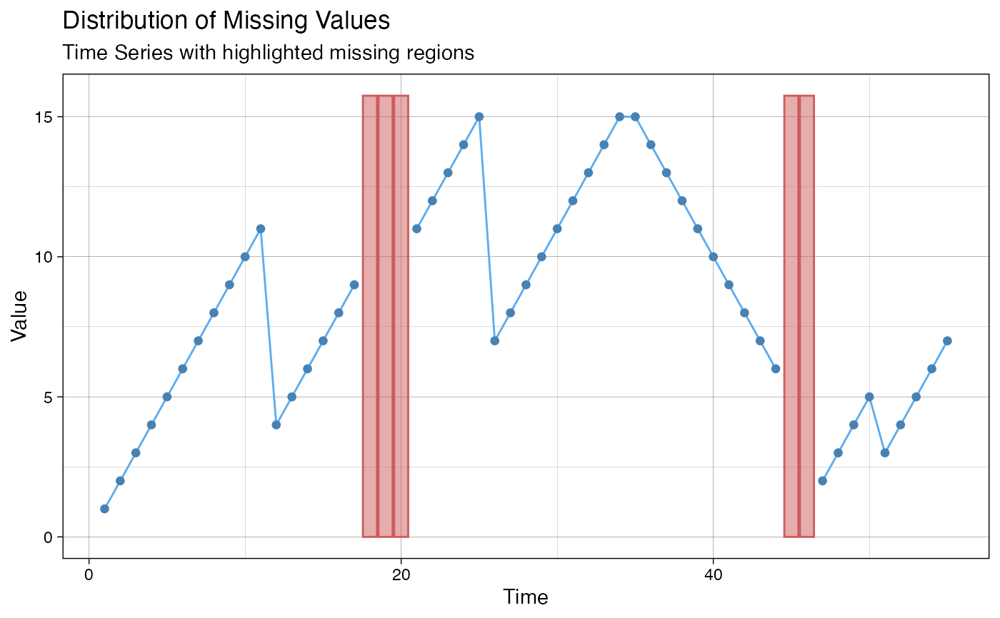
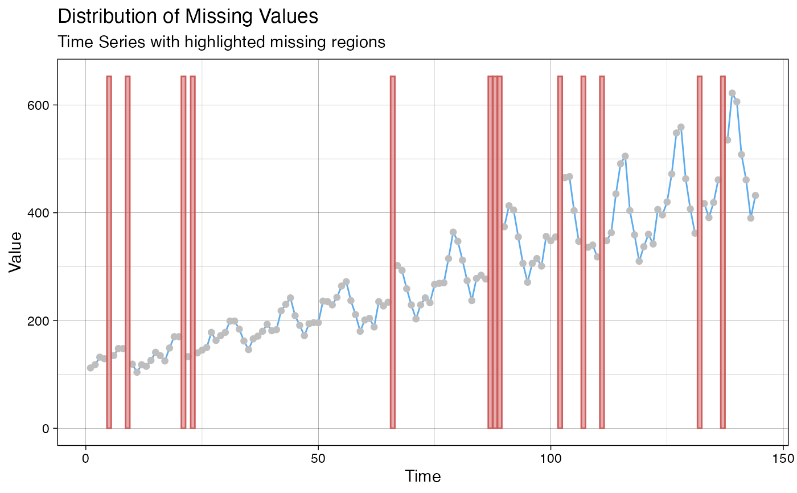
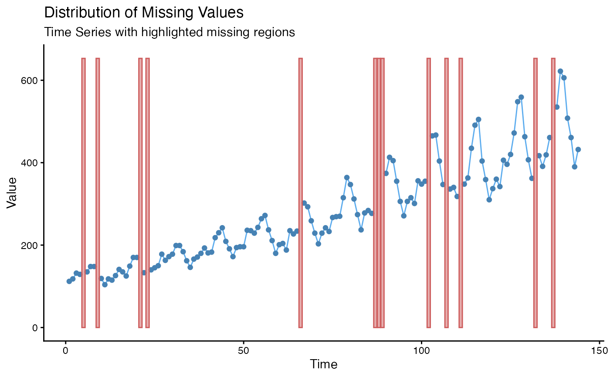
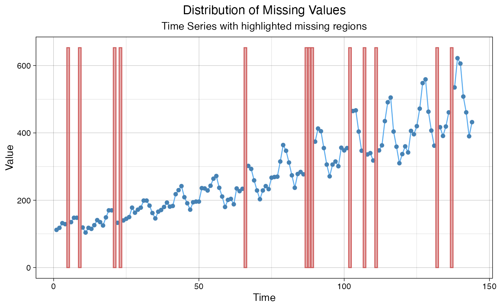
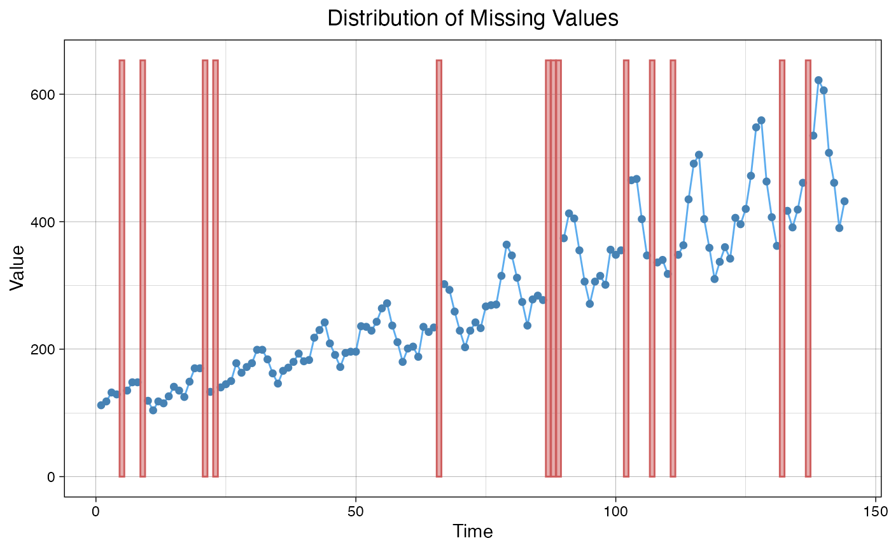
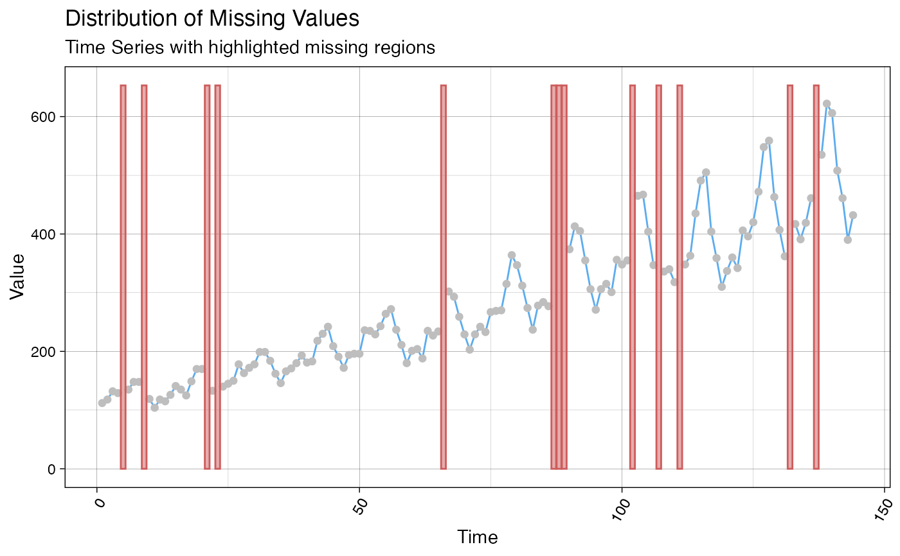

Visualize the Distribution of Missing Values
Source:R/ggplot_na_distribution.R
ggplot_na_distribution.RdVisualize the distribution of missing values within a time series.
ggplot_na_distribution( x, x_axis_labels = NULL, color_points = "steelblue", color_lines = "steelblue2", color_missing = "indianred", color_missing_border = "indianred", alpha_missing = 0.5, title = "Distribution of Missing Values", subtitle = "Time Series with highlighted missing regions", xlab = "Time", ylab = "Value", shape_points = 20, size_points = 2.5, theme = ggplot2::theme_linedraw() )
Arguments
| x | Numeric Vector ( |
|---|---|
| x_axis_labels | For adding specific x-axis labels. Takes a vector of
|
| color_points | Color for the Symbols/Points. |
| color_lines | Color for the Lines. |
| color_missing | Color used for highlighting the time spans with NA values. |
| color_missing_border | Color used as border for time spans with NA values. |
| alpha_missing | Transparency value used for color_missing. |
| title | Title of the Plot (NULL for deactivating title). |
| subtitle | Subtitle of the Plot (NULL for deactivating subtitle). |
| xlab | Label for x-Axis. |
| ylab | Label for y-Axis. |
| shape_points | Symbol to use for the Observations/Points. See https://ggplot2.tidyverse.org/articles/ggplot2-specs.html as reference. |
| size_points | Size of Symbols/Points. |
| theme | Set a Theme for ggplot2. Default is ggplot2::theme_linedraw().
( |
Details
This function visualizes the distribution of missing values within a time series. If a value is NA, the background is colored differently. This gives a good overview of where most missing values occur.
The only really needed parameter for this function is x (the univariate time series that shall be visualized). All other parameters are solely for altering the appearance of the plot.
As long as the input is univariate and numeric the function also takes data.frame, tibble, tsibble, zoo, xts as an input.
The plot can be adjusted to your needs via the function parameters. Additionally for more complex adjustments, the output can also be adjusted via ggplot2 syntax. This is possible, since the output of the function is a ggplot2 object. Also take a look at the Examples to see how adjustments are made.
For very long time series it might happen, that the plot gets too crowded
and overplotting issues occur. In this case the
ggplot_na_intervals plotting function can provide
a more condensed overview.
See also
Author
Steffen Moritz, Sebastian Gatscha
Examples
# Example 1: Visualize the missing values in x x <- stats::ts(c(1:11, 4:9, NA, NA, NA, 11:15, 7:15, 15:6, NA, NA, 2:5, 3:7)) ggplot_na_distribution(x)# Example 2: Visualize the missing values in tsAirgap time series ggplot_na_distribution(tsAirgap)# Example 3: Same as example 1, just written with pipe operator x <- ts(c(1:11, 4:9, NA, NA, NA, 11:15, 7:15, 15:6, NA, NA, 2:5, 3:7)) x %>% ggplot_na_distribution()# Example 4: Visualize NAs in tsAirgap - different color for points # Plot adjustments via ggplot_na_distribution function parameters ggplot_na_distribution(tsAirgap, color_points = "grey")# Example 5: Visualize NAs in tsAirgap - different theme # Plot adjustments via ggplot_na_distribution function parameters ggplot_na_distribution(tsAirgap, theme = ggplot2::theme_classic())# Example 6: Visualize NAs in tsAirgap - title, subtitle in center # Plot adjustments via ggplot2 syntax ggplot_na_distribution(tsAirgap) + ggplot2::theme(plot.title = ggplot2::element_text(hjust = 0.5)) + ggplot2::theme(plot.subtitle = ggplot2::element_text(hjust = 0.5))# Example 7: Visualize NAs in tsAirgap - title in center, no subtitle # Plot adjustments via ggplot2 syntax and function parameters ggplot_na_distribution(tsAirgap, subtitle = NULL) + ggplot2::theme(plot.title = ggplot2::element_text(hjust = 0.5))# Example 8: Visualize NAs in tsAirgap - x-axis texts with angle # Plot adjustments via ggplot2 syntax and function parameters ggplot_na_distribution(tsAirgap, color_points = "grey") + ggplot2::theme(axis.text.x = ggplot2::element_text(angle = 60, hjust = 1))